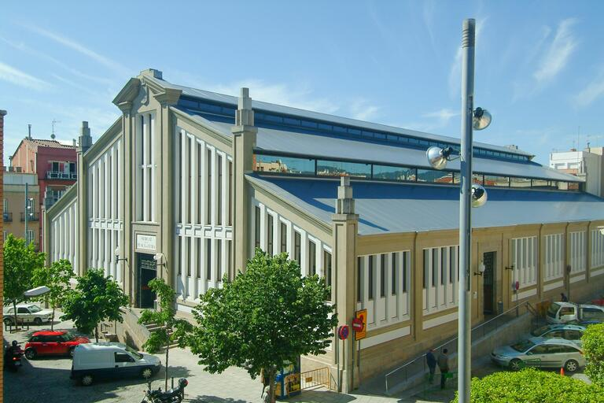

Servei · Mataró
El Mercat municipal de la plaça de Cuba va començar la seva activitat a finals del segle XIX, en ple creixement urbanístic de la ciutat, com a mercat no sedentari. L’edifici actual del mercat es…